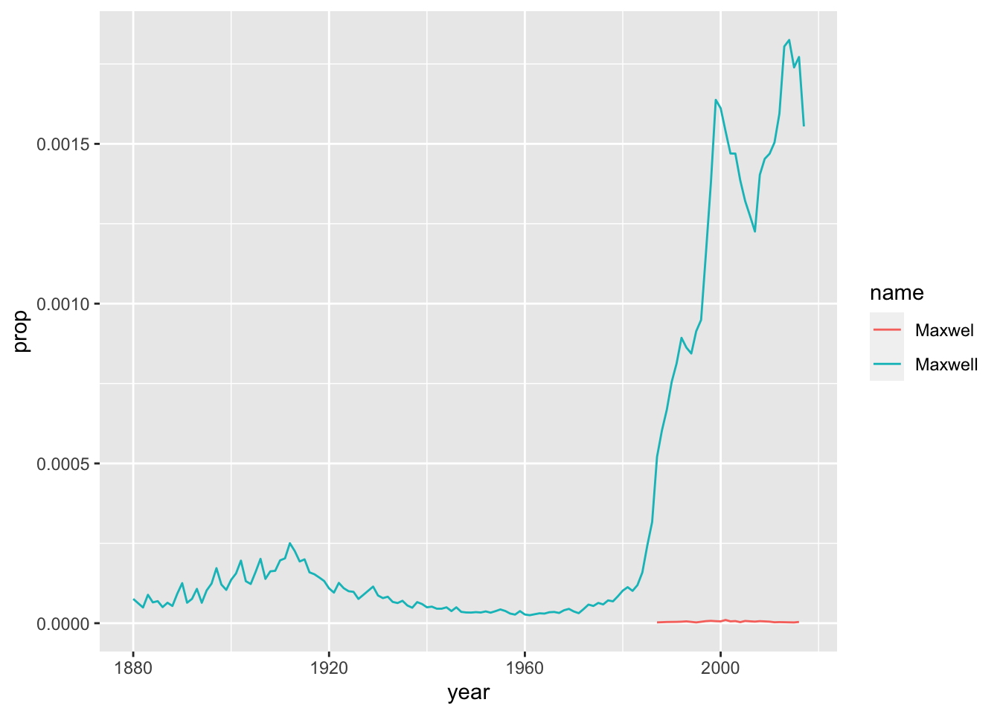

Babynames
Make a figure with your name
Run the codes
library(babynames) # babynames dataset
library(dplyr) # data manipulation
Attaching package: 'dplyr'The following objects are masked from 'package:stats':
filter, lagThe following objects are masked from 'package:base':
intersect, setdiff, setequal, unionlibrary(ggplot2) # high quality graphsglimpse(babynames) #dplyrRows: 1,924,665
Columns: 5
$ year <dbl> 1880, 1880, 1880, 1880, 1880, 1880, 1880, 1880, 1880, 1880, 1880,…
$ sex <chr> "F", "F", "F", "F", "F", "F", "F", "F", "F", "F", "F", "F", "F", …
$ name <chr> "Mary", "Anna", "Emma", "Elizabeth", "Minnie", "Margaret", "Ida",…
$ n <int> 7065, 2604, 2003, 1939, 1746, 1578, 1472, 1414, 1320, 1288, 1258,…
$ prop <dbl> 0.07238359, 0.02667896, 0.02052149, 0.01986579, 0.01788843, 0.016…head(babynames) # base R# A tibble: 6 × 5
year sex name n prop
<dbl> <chr> <chr> <int> <dbl>
1 1880 F Mary 7065 0.0724
2 1880 F Anna 2604 0.0267
3 1880 F Emma 2003 0.0205
4 1880 F Elizabeth 1939 0.0199
5 1880 F Minnie 1746 0.0179
6 1880 F Margaret 1578 0.0162tail(babynames) # same# A tibble: 6 × 5
year sex name n prop
<dbl> <chr> <chr> <int> <dbl>
1 2017 M Zyhier 5 0.00000255
2 2017 M Zykai 5 0.00000255
3 2017 M Zykeem 5 0.00000255
4 2017 M Zylin 5 0.00000255
5 2017 M Zylis 5 0.00000255
6 2017 M Zyrie 5 0.00000255New dataset maxwel
maxwel <- babynames %>%
filter(name == "Maxwel" | name == "Maxwell") %>% # variants of name
filter(sex == "M") # sex F or Mmaxwel# A tibble: 161 × 5
year sex name n prop
<dbl> <chr> <chr> <int> <dbl>
1 1880 M Maxwell 9 0.0000760
2 1882 M Maxwell 6 0.0000492
3 1883 M Maxwell 10 0.0000889
4 1884 M Maxwell 8 0.0000652
5 1885 M Maxwell 8 0.000069
6 1886 M Maxwell 6 0.0000504
7 1887 M Maxwell 7 0.0000640
8 1888 M Maxwell 7 0.0000539
9 1889 M Maxwell 11 0.0000924
10 1890 M Maxwell 15 0.000125
# … with 151 more rowsglimpse(maxwel)Rows: 161
Columns: 5
$ year <dbl> 1880, 1882, 1883, 1884, 1885, 1886, 1887, 1888, 1889, 1890, 1891,…
$ sex <chr> "M", "M", "M", "M", "M", "M", "M", "M", "M", "M", "M", "M", "M", …
$ name <chr> "Maxwell", "Maxwell", "Maxwell", "Maxwell", "Maxwell", "Maxwell",…
$ n <int> 9, 6, 10, 8, 8, 6, 7, 7, 11, 15, 7, 10, 13, 8, 13, 16, 21, 16, 12…
$ prop <dbl> 0.00007601, 0.00004917, 0.00008891, 0.00006518, 0.00006900, 0.000…Graph
plot <- ggplot(maxwel,
aes(x = year,
y = prop,
group = name,
color = name)) +
geom_line() plot
Save the figure
ggsave("maxwel_oliveira.png", plot)Saving 7 x 5 in image